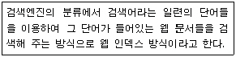
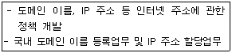
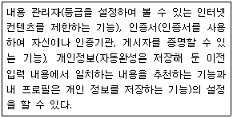
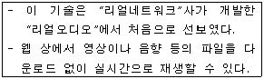
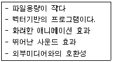
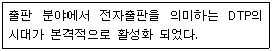
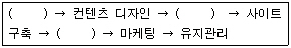
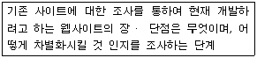

웹디자인기능사 (2006-10-01 기출문제)
1과목: 디자인 일반
1. 다음 다이렉트 메일의 종류 중 노벨티(novelty)의 예로 바른 것은?
- 한 장짜리 지면을 보통 2~3겹 접은 소형 광고물 등
- 상품명이나 상점 이름이 들어있는 수건, 재떨이, 라이터 등
- 광고주의 메시지를 봉투에 넣어 인사문을 겸하는 편지 등
- 회사나 판매점이 발행하는 기관지 등
(정답률: 68%)

2. 먼저 본 색의 영향으로 나중에 보는 색이 다르게 보이는 현상은?
- 동시대비
- 면적대비
- 연변대비
- 계시대비
(정답률: 78%)
3. 다음 중 디자인 요소인 선이 주는 느낌으로 잘못 이루어진 것은?
- 수직선 - 긴장감
- 수평선 - 안정감
- 사선 - 불안정감
- 곡선 - 상승감
(정답률: 83%)
4. 형태의 분류 중 이념적 형태에 대한 설명으로 옳은 것은?
- 자연형태, 인위적 형태로 분류할 수 있다.
- 눈으로 볼 수 있고 손으로 만질 수 있는 모든 형태를 말한다.
- 점, 선, 면의 이동형태에 따라 입체를 형성하기 때문에 추상형태라고 한다.
- 현실적으로 존재하는 형태를 말한다.
(정답률: 71%)
5. 1, 2, 4, 16...과 같이 이웃하는 두 항의 비가 일정한 수열에 의한 비례는?
- 등차수열
- 등비수열
- 피보나치 수열
- 정수비
(정답률: 84%)
6. 다음 중 채도대비에 대한 설명으로 바른 것은?
- 채도가 높은 선명한 색 위에 채도가 낮은 탁한색을 놓으면 탁한 색은 더욱 탁하게 보이게 된다
- 색상환에서 서로 반대쪽에 위치하는 색의 대비이다
- 사람의 감각은 색의 3속성 중 채도 대비에 가장 민감하다.
- 무채색은 채도가 없으므로 무채색과 유채색 사이에서는 채도대비가 생기지 않는다.
(정답률: 71%)
7. 다음 중 명시성(가시성)이 가장 높은 색의 조합은?
- 백색 바탕에 적색 글씨
- 백색 바탕에 검정 글씨
- 청색 바탕에 백색 글씨
- 노랑 바탕에 검정 글씨
(정답률: 67%)
8. 다음 중 환경 디자인의 목적을 바르게 설명한 것은?
- 인간이 생활하는데 불편하지 않도록 최대한 인공환경을 조성한다.
- 생존에 필요한 생활공간과 자연 생태계가 조화를 이루도록 한다.
- 자연환경을 보존하고 개발되지 않도록 하는데 있다.
- 생태계의 보호를 위해 자연공간과 인간이 생활하는 공간을 정확하게 나누는데 있다.
(정답률: 81%)
9. 실용성과 효용성에 관련되는 디자인의 조건은?
- 독창성
- 심미성
- 경제성
- 합목적성
(정답률: 86%)
10. 먼셀의 색체계에서 색상의 기본색을 10가지로 나누었을 때 포함되지 않는 색은?
- PR
- P
- YR
- GY
(정답률: 60%)
11. 게슈탈트의 시지각 원리가 아닌 것은?
- 근접성
- 유사성
- 독자성
- 폐쇄성
(정답률: 81%)
12. 다음 중에서 제과점 홈페이지를 만들 때, 식욕을 돋우는 색채계획과 가장 거리가 먼 것은?
- 녹색
- 주황
- 노랑
- 빨강
(정답률: 85%)
13. 다음 중 디자인의 원리가 아닌 것은?
- 조화
- 균형
- 리듬
- 재질감
(정답률: 85%)
14. 그레이 스케일(Gray Scale)이란?
- 색상환에서 서로 마주보는 색을 혼합하는 것이다
- 흰색, 회색, 검은색을 말한다.
- 명도의 기준 척도로 검은색과 흰색 사이의 단계를 나누어 놓은 것이다.
- 색의 순환성에 따라 원형으로 배열한 것이다.
(정답률: 77%)
15. 다음 중 굿 디자인(good design)의 조건이 아닌 것은?
- 심미성
- 독창성
- 대중성
- 경제성
(정답률: 79%)
16. 패턴 디자인은 어떤 디자인 원리를 이용한 것인가?
- 반복
- 동세
- 강조
- 이동
(정답률: 93%)
17. 두 색상을 동일한 양으로 혼합하였더니 검정에 가까운 회색이 되었다. 이 때 두 색상의 관계는?
- 대비색
- 보색
- 유사색
- 인근색
(정답률: 70%)
18. 색의 진출에 대한 설명으로 틀린 것은?
- 따뜻한 색이 차가운 색보다 더 진출하는 느낌을 준다.
- 밝은 색이 어두운 색보다 더 진출하는 느낌을 준다.
- 무채색이 유채색보다 더 진출하는 느낌을 준다.
- 팽창색이 수축색보다 더 진출하는 느낌을 준다.
(정답률: 86%)
19. 다음 중 CIP(Corporate Identity Program)의 기본구성요소가 아닌 것은?
- 심볼마크
- 표지
- 시그니쳐
- 전용서체
(정답률: 65%)
20. 사인(Sign)이나 심볼 마크(Symbol Mark)가 속한 디자인 영역으로 사람과 사람 사이를 연결해주는 하나의 매개체가 되는 디자인 분야는?
- 시각 디자인
- 제품 디자인
- 환경 디자인
- 영상 디자인
(정답률: 87%)
2과목: 인터넷 일반
21. 자바스크립트에서 이벤트 핸들러에 대한 설명으로 옳지 않은 것은?
- onBlur : 대상이 포커스를 잃어 버렸을 때 발생되는 이벤트를 처리
- onFocus : 대상에 포커스가 들어왔을 때 발생되는 이벤트를 처리
- onMouseOn : 마우스가 대상의 링크나 영역 안에 위치할 때 발생되는 이벤트를 처리
- onMouseOut : 마우스가 대상의 링크나 영역 안 벗어날 때 발생되는 이벤트를 처리
(정답률: 65%)
22. 두 개의 컴퓨터 사이에 정보교환을 위해 사용되는 규칙을 의미하는 것은?
- 스트림
- 패킷
- 프로토콜
- GUI
(정답률: 82%)
23. 다음이 설명하고 있는 웹 검색 엔진의 유형은?

- 주제별 검색
- 키워드형 검색
- 메타검색
- 지능형 검색
(정답률: 79%)
24. 다음에서 설명하고 있는 업무를 담당하고 있는 기관은?

- WWW-KR
- INTER-NIC
- KRNIC
- KOREANET
(정답률: 71%)
25. 웹 검색 방식 중 키워드 검색 방식에 해당되지 않는 것은?
- 까치네
- 알타비스타
- 인포시크
- 미스다찾니
(정답률: 56%)
26. 정보의 검색 결과에서 불필요하게 검색된 쓸모없는 쓰레기 정보를 지칭하는 용어는?
- 리키즈(LeaKage)
- 시스러스(Thesaurus)
- 불 용어(Noise Word)
- 가비지(Garbage)
(정답률: 84%)
27. HTTP 프로토콜을 지원하는 웹브라우저는 OSI 7계층의 어느 계층에 해당하는가?
- 물리(Physical)
- 데이터링크(Data link)
- 네트워크(Network)
- 애플리케이션(Application)
(정답률: 41%)
28. IP주소는 5가지 등급(class)으로 나눌 수 있다. 이 중 C등급에서의 사용 가능한 호스트 개수는 몇 개로 제한하는가?
- 256개
- 255개
- 254개
- 253개
(정답률: 47%)
29. 전자우편을 송신할 때 사용되는 프로토콜은?
- TCP/IP
- SMTP
- POP
- IMAP
(정답률: 81%)
30. TCP/IP 프로토콜의 유틸리티가 아닌 것은?
- ipconfig
- repeater
- nbtstat
- tracert
(정답률: 55%)
31. 애니메이션에서 사용되는 정지화면 하나하나를 무엇이라고 하는가?
- Frame
- Key Frame
- Tweeing
- Onion Skin
(정답률: 84%)
32. 외부 네트워크로부터 내부 네트워크를 보호하기 위해 이들 사이에서 전달되는 모든 신호를 판독하여 특정 패킷만을 통과시키거나 차단시키며, 내부의 IP주소가 외부로 유출되는 것을 방지하는 역할을 하는 것은?
- 프록시(Proxy)
- 방화벽(firewall)
- 도메인네임서버(DNS)
- 허브(Hub)
(정답률: 88%)
33. HTML의 <Table>태그 중 테이블의 테두리 두께를 지정하는 속성은?
- border
- cellpadding
- width
- spacing
(정답률: 80%)
34. 그래픽으로 정보를 제공해주는 것으로 사용자들이 쉽게 컨텐츠를 찾게 해주며 친근감을 부여해주는 역할을 하는 것을 무엇이라고 하는가?
- Sign
- Metapho
- Tag
- Interaction
(정답률: 57%)
35. 웹 브라우저에 보이는 정보를 나타내는 언어를 지정하는 메뉴로 해당 국가의 웹 문서를 읽을 때 문자가 제대로 보이지 않거나 깨져서 보일 경우 해당국가의 언어를 선택하여 제대로 보이도록 설정하는 기능은?
- 인코딩
- 새로고침
- 동기화
- 소스
(정답률: 74%)
36. HTML 태그에서 사용되는 글자 모양에 관련된 태그 설명이 올바르지 않은 것은?
- <B>...</B>태그는 강조된 글자 모양으로 표시하기 위한 태그이다.
- <CITE>...</CITE>태그는 인용문 글자 모양으로 표시할 때 사용하는 태그이다.
- <SUB>...</SUB>태그는 위 첨자 모양의 글자로 표시할 때 사용하는 태그이다.
- <CODE>...</CODE>태그는 프로그램 코드 글자 모양으로 표시할 때 사용하는 태그이다.
(정답률: 65%)
37. 인터넷 익스플로러 6.0에서 다음이 설명하는 기능은 어떤 탭에서 설정할 수 있는가?

- [도구] - [인터넷 옵션] - [내용]
- [도구] - [인터넷 옵션] - [보안]
- [도구] - [인터넷 옵션] - [연결]
- [도구] - [인터넷 옵션] - [프로그램]
(정답률: 60%)
38. 인터넷상의 서버에 자신의 계정이 있어서, 서버에 접속하기 위해 사용자명과 패스워드를 입력하는 행위를 지칭하는 용어는?
- 로그아웃(logout)
- 로그인(login)
- 링크(Link)
- 서핑(Surfing)
(정답률: 95%)
39. 개인이나 회사들에게 인터넷 접속 서비스, 웹사이트 구축 및 웹호스팅 서비스 등을 제공하는 회사들을 일컫는 것은?
- ISP
- FTP
- ADSL
- SLIP
(정답률: 56%)
40. 웹 브라우저의 기능으로 적절치 않은 것은?
- 최근 방문한 URL의 목록 제공
- 웹 페이지의 저장 및 인쇄
- 웹 페이지 열기
- 웹프로그램 코딩 및 편집
(정답률: 87%)
3과목: 웹그래픽스 디자인
41. 컴퓨터 그래픽에서 8(bit)로는 몇 가지의 컬러를 표현할 수 있는가?
- 64
- 128
- 256
- 1024
(정답률: 70%)
42. 포토샵 7.0을 설치하면 자동으로 설치되는 웹 전용 이미지 제작프로그램으로 색상을 최적화하고 롤 오버 버튼이나 하이퍼링크의 설정 및 홈페이지 이미지를 제작할 수 있는 프로그램은?
- 이미지 레디
- 플래시
- 쇽웨이브
- 플러그 인
(정답률: 60%)
43. 컴퓨터그래픽스 시스템에 사용되는 입력장치에 해당 되지 않는 것은?
- 트랙볼(track ball)
- 터치스크린(touch screen)
- 라이트펜(light pen)
- 빔 프로젝터(beam projector)
(정답률: 85%)
44. 웹 페이지에서 빛의 삼원색으로 표현하는 컬러시스템은?
- HSB
- GUI
- CMYK
- RGB
(정답률: 88%)
45. 컴퓨터그래픽스의 기법 중 산맥이나 구름과 같이 불규칙적이고 균열된 물체를 표현하기 위해 그래픽 이론을 토대로 실물과 유사하게 표현하는 기법은?
- 광선 추적법
- 프랙탈(Fractal)
- 세이딩(Shading)
- 매핑(Mapping)
(정답률: 69%)
46. 일반적으로 “해상도가 높다”라는 말의 의미로 옳지 않은 것은?
- 이미지가 선명하다.
- 이미지 질(Quality)이 좋다.
- 이미지의 용량이 적다.
- 일정 단위의 크기에 많은 픽셀을 포함한다.
(정답률: 91%)
47. 컴퓨터그래픽스 시스템의 구성요소 중 전원이 갑자기 나갔을 때 정보를 유실하는 휘발성 기억장치는?
- HDD
- Memory Stick
- RAM
- ROM
(정답률: 78%)
48. 다음이 설명하고 있는 기술은?

- Gif 애니메이션
- 퀵타임(Quick-time)
- 스트리밍(Streaming)
- Flash 애니메이션
(정답률: 79%)
49. 다음과 같은 특징을 모두 포함하고 있는 프로그램은?

- 그림판
- 플래시
- 포토샵
- 페인터
(정답률: 86%)
50. 이미지 파일 포맷(format)이 아닌 것은?
- MP3
- TIFF
- PNG
- BMP
(정답률: 86%)
51. 1946년 미국의 “에커드”와 모클리“에 의해 개발된 세계최초의 컴퓨터는?
- 애플
- 맥킨토시
- 애니악
- IBM
(정답률: 85%)
52. 웹 사이트 기획에 관한 사항으로 옳지 않은 것은?
- 사용자 분석
- 타블렛 드로잉
- 제작팀원 구성
- 콘텐츠 기획
(정답률: 74%)
53. 웹디자인 프로세스 도입의 장점이 아닌 것은?
- 인력분배의 효율성 저하
- 피드백 및 실행 착오의 최소화
- 팀간의 의사소통 원활
- 앞으로의 흐름 예견
(정답률: 79%)
54. 컴퓨터 그래픽스의 시대별 발전과정 중 제 5세대에서 컴퓨터 환경이 사용자 중심 환경으로 발전하게 된 가장 큰 동기는 무엇인가?
- CRT모니터
- GUI의 발전
- CAD시스템
- OA개막
(정답률: 79%)
55. 다음 설명은 컴퓨터 그래픽스 역사 중 몇 세대인가?

- 제 2세대
- 제 3세대
- 제 4세대
- 제 5세대
(정답률: 41%)
56. 로고(Logo)를 제작하기에 적합한 소프트웨어는?
- 3D MAX
- Word Processor
- Edit Plus
- Illustrator
(정답률: 92%)
57. 다음은 웹사이트 개발 단계이다. ( )에 들어갈 단계를 순서대로 바르게 나열한 것은?

- 컨셉 정의, 사이트 디자인, 테스트 및 수정보완
- 컨셉 정의, 테스트 및 수정보완, 사이트 디자인
- 사이트 디자인, 컨셉 정의, 테스트 및 수정보완
- 사이트 디자인, 테스트 및 수정보완, 컨셉 정의
(정답률: 76%)
58. 오늘날 컴퓨터 그래픽스 인터페이스에 영향을 미친 60년대초에 “이반 서덜랜드”에 의해 개발된 드로잉 프로그램은?
- 스케치 패드(Sketch pad)
- 캐드(CAD)
- 메킨토시(Macintosh)
- 자바(Java)
(정답률: 55%)
59. 컴퓨터로 원이나 곡선 같은 도형을 그릴 때 경계부분에 계단 모양의 부자연스러움을 없애 부드럽게 처리하는 것을 무엇이라 하는가?
- 디더링
- 안티앨리어싱
- 모델링
- 팔레트 플래싱
(정답률: 91%)
60. 다음이 설명하고 있는 웹디자인 프로세스 단계는?

- 이미지 제작 단계
- 동영상 제작 단계
- 배경 설정 단계
- 시장 조사 단계
(정답률: 89%)